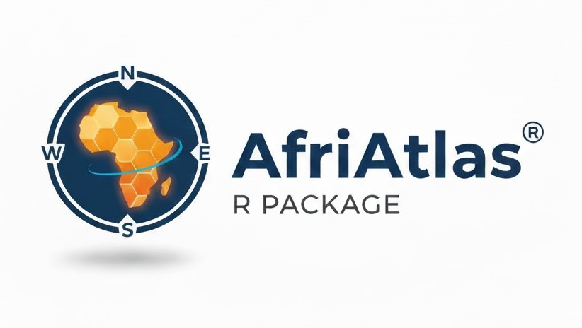

The AfriAtlas R package provides robust, publication-ready tools for ecologists and enthusiasts to download, process, and visualize pentad-level bird atlas data from the African Bird Atlas Project (ABAP) and its associated country projects (like Nigeria Bird Atlas Project).
The package is designed for portability and efficiency, handling dynamic boundaries via the rnaturalearth package and enforcing API safety limits.
You can install the development version of AfriAtlas directly from GitHub using the remotes package.
# Install necessary dependencies if you haven't already
if (!requireNamespace("remotes", quietly = TRUE)) {
install.packages("remotes")
}
# Install AfriAtlas
remotes::install_github("bdanmallam/AfriAtlas")The mapping functions require numeric Species Codes (e.g., 11491 for Common Bulbul). AfriAtlas provides three tools to help you manage these codes.
If you know the English common name, you can quickly retrieve the code. This function is case-sensitive.
# Find code for Common Bulbul
code <- get_species_code("Common Bulbul")
print(code)
# Find code for Pin-tailed Whydah
get_species_code("Pin-tailed Whydah")If you are unsure of the spelling or want to browse the full species codes, this function opens the internal dataset in the RStudio Viewer.
(Note: This function works only in interactive sessions).
Before running a batch process, it is best practice to review the list of codes being used. The show_codes() function is a simple utility for this. Note that the primary mapping function, map_species(), will stop execution if the list exceeds Spp 10 codes.
# Example list of species codes (e.g., common African species)
my_species_list <- c(129, 311, 437, 846, 11491, 1168)
# Check the list size
show_codes(my_species_list)
# Example of a list exceeding the limit (Will stop map_species() execution)
# show_codes(c(1:12))Generates a map of species sightings versus coverage, including a widespreadness pie chart. Execution is halted if more than 10 species are requested.
library(AfriAtlas)
# Generate a single species map for South Africa (Pin-tailed Whydah)
map_species(species_codes = 846, country = "Nigeria")
# Generate maps for a batch of species in Kenya (saved as PNGs)
map_species(species_codes = c(129, 311), country = "Kenya")Generates a map showing the total full-protocol survey hours (effort) per pentad. Categories are dynamically adjusted based on the maximum effort level found in the country.
# Generate effort map for Nigeria
map_coverage("Nigeria")
# Generate effort map for South Africa
map_coverage("South Africa")For detailed guides, examples, and technical explanations, please refer to the package vignette:
vignette("AfriAtlas_tutorial")